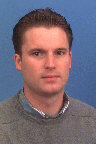

| Biography | Shorter Biography | Short Biography | Photos |
Biography
Peter R. Kinget received the engineering degree (Summa cum Laude) in electrical and mechanical engineering and the Ph.D. (Summa cium Laude with Congratulations of the Jury) in electrical engineering from the Katholieke Universiteit Leuven, Belgium, in 1990 and 1996, respectively.
From 1991 to 1995, he received a graduate fellowship from the Belgian National Fund for Scientific Research (NFWO) to work as a Research Assistant at the ESAT-MICAS of the Katholieke Universiteit Leuven. From 1996 to 1999 he was at Bell Laboratories, Lucent Technologies, in Murray Hill, NJ, as a Member of Technical Staff in the Design Principles Department. From 1999 to 2002 he held various technical and management positions in IC design and development at Broadcom, CeLight and MultiLink. In 2002 he joined the faculty of the Department of Electrical Engineering, Columbia University, N.Y., where he currently is the Bernard J. Lechner Professor of Electrical Engineering. From 2017-2020 he served as Department Chair. He is also a consulting expert on patent litigation and a technical consultant to industry.
His research interests are in analog, RF and power integrated circuits and the applications they enable in communications, sensing, and power management. He is widely published in journals and conferences, has co-authored 3 books and holds 41 US patents with several applications under review. His research group has received funding from the National Science Foundation, the Semiconductor Research Corporation, Department of Energy (ARPA-E), Department of Defense (DARPA), and an IBM Faculty Award. It has further received in-kind and grant support from several of the major semiconductor companies.
Dr. Kinget is a Fellow of the IEEE. He was an elected member of the IEEE Solid-State Circuits Society Adcom, the society’s governing board (2011-2013 & 2014-2016), and was a member of the Board of the Armstrong Memorial Research Foundation (2008-2018). He was a “Distinguished Lecturer” for the IEEE Solid-State Circuits Society (2009-2010 & 2015-2017) and an Associate Editor of the IEEE Journal of Solid State Circuits (2003-2007) and the IEEE Transactions on Circuits and Systems II(2008-2009). He has served as a member of the Technical Program Committee of the IEEE Custom Integrated Circuits Conference (CICC) (2000-2005, 2016-2018), the Symposium on VLSI Circuits (2003-2006), the European Solid-State Circuits Conference (2005-2010), and the International Solid-State Circuits Conference (2005-2012).
In 2020, he became the inaugural recipient of the IEEE Solid-State Circuits Society 2020 Innovative Education Award. He is also a co-recipient of the “Best Student Paper Award - 1st Place” at the 2008 IEEE Radio Frequency Integrated Circuits (RFIC) Symposium, of the “First Prize” in the 2009 Vodafone Americas Foundation Wireless Innovation Challenge, of the “Best Student Demo Award” at the 2011 ACM Conference on Embedded Networked Sensor Systems (ACM SenSys), of the “2011 IEEE Communications Society Award for Advances in Communication” for an outstanding paper in any IEEE Communications Society publication in the past 15 years, of the “First Prize ($100K)” in the 2012 Interdigital Innovation Challenge (I2C), of the “Best Student Paper Award - 2nd Place” at the 2015 IEEE Radio Frequency Integrated Circuits (RFIC) Symposium, of the “Best Poster Award” at the 2015 IEEE Custom Integrated Circuits Conference (CICC), and of the “Best Student Paper Award - 3rd Place” at the 2018 IEEE Radio Frequency Integrated Circuits (RFIC) Symposium.
Shorter Biography
Peter R. Kinget received an engineering degree in electrical and mechanical engineering and the Ph.D. in electrical engineering from the Katholieke Universiteit in Leuven, Belgium.
He has worked in industrial research and development at Bell Laboratories, Broadcom, Celight and Multilink before joining the faculty of the Department of Electrical Engineering, Columbia University, NY in 2002, where he currently is the Bernard J. Lechner Professor of Electrical Engineering. He served as Department Chair from 2017-2020. He is also a consulting expert on patent litigation and a technical consultant to industry. His research interests are in analog, RF and power integrated circuits and the applications they enable in communications, sensing, and power management.
Peter is widely published and received several awards. He is a Fellow of the IEEE. He has been a “Distinguished Lecturer” for the IEEE Solid-State Circuits Society (SSCS), and an Associate Editor of the IEEE Journal of Solid State Circuits (2003-2007) and the IEEE Transactions on Circuits and Systems II (2008-2009). He has served on the program committees of many of the major solid-state circuits conferences and has been an elected member of the IEEE SSCS Adcom (2011-2013 & 2014-2016).
Short Biography
Peter Kinget is the Bernard J. Lechner Professor of Electrical Engineering at Columbia University in New York. He received his engineering and Ph.D. degrees in electrical engineering from the Katholieke Universiteit in Leuven (Belgium). His research group focusses on the design of analog and RF integrated circuits and the novel systems or applications they enable in communications, sensing, and power management.
Photos
1996
